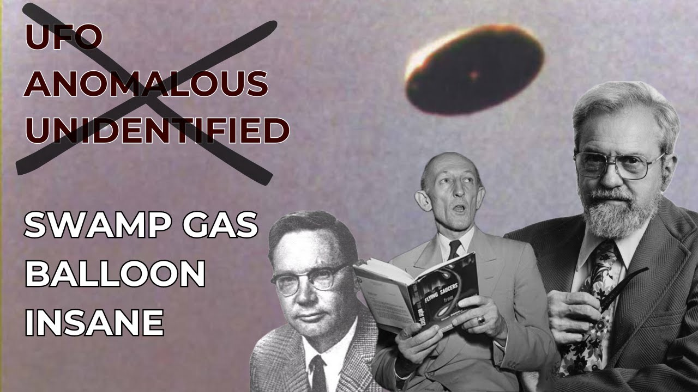

The Origin of the UFO Stigma

Published: 2024-02-10 · Duration: 24:38 · Channel: UAP Gerb
Description
JOIN THE UAP DISCORD: https://discord.gg/JfSnXY3GQb
OR EMAIL UAPGERB@GMAIL.COM for full case files from this investigation
Even in 2024, when someone mentions UFOs in private or professional circles, they are often scoffed at and met with ridicule. Historically, mentioning a UAP sighting by a commercial or military pilot has been a death sentence, and politicians/military personnel avoid any mention of unidentified craft to maintain "sound mind".
But where and why did this stigma begin? Was it conducted purposefully to alter public perception of the phenomena? In today's video, we will walk through the carefully conducted disinformation campaign orchestrated by the USG, CIA, and USG Military throughout the 1950s and 1960s to lump the study of UFO and "flying saucer" with the likes of paranormal topics such as ghosts, bigfoot, Illuminati conspiracy, etc.
By leveraging the USG and USAF official UFO investigation studies - Sign, Grudge, and Blue Book, as well as orchestrating the famous Robertson Panel and Condon Committee, all scientific investigation ability was stripped of UFOs and the subject became pseudoscience.
Of course, we know even with the termination of Project Blue Book in 1969, the USG maintained rigid study into UFO until the present day....
0:00 Intro 2:50 Project Sign 4:29 Project Grudge 5:57 Project Blue Book 8:16 Lt. General Samford Conference 9:56 Robertson Panel 13:03 First Congressional UFO Hearings 13:03 Condon Committee 16:36 Trick Memo 18:12 Condon Committee Findings 22:25 Conclusion
Project Sign Report: https://archive.org/details/ProjectSIGN
Project Grudge: https://www.secretsdeclassified.af.mil/Portals/67/documents/AFD-110719-005.pdf?ver=2016-07-19-142520-690
Project Grudge and Blue Book Report: https://upload.wikimedia.org/wikipedia/commons/6/61/Project_Blue_Book%2C_complete_status_reports.pdf
Twinning Letter on Project Sign: https://www.documentcloud.org/documents/20797978-twining-memo
Robertson Panel Report: https://documents.theblackvault.com/documents/ufos/robertsonpanelreport.pdf
AFR 200-2: https://www.cia.gov/readingroom/docs/CIA-RDP81R00560R000100040072-9.pdf
Gerald Ford Letter: https://www.fordlibrarymuseum.gov/library/document/0054/4525586.pdf
Trick Memo: https://www.nicap.org/docs/660809lowmemo.htm
Music by the always talented: https://www.youtube.com/channel/UCz71_7z7NphLPZ0l_7G3Llg
ufo #uap #uapnukes #uapdisclosure #ufology #ufonews #ufosightings #uapsightings #ufofootage #uapfootage #hynek #condoncomittee #Jallenhynek #projectsign #projectgrudge #projectbluebook #bluebook #ufocongress
Transcript
Show transcript
I've been studying UFOs. I've been studying UFOs. Did you know there are UFOs out here flying around? Unidentified UFOs. This would be the place for them, Southern California. It could be aliens, it could be balloons, or it could be alien balloons. President Obama says that there is footage and records of objects in the skies. He's asked these unidentified aerial phenomenon and he says we don't know exactly what they are. What do you think that it is? I would ask him again. Thank you. The reality of the unidentified aerial or submerged phenomena is not up for debate. It is fact there are anomalous signatures that operate in our skies, oceans, and near-Earth orbit that exhibit strange and astounding characteristics including instantaneous acceleration, hypersonic velocity, anti-gravity, low observability, and transmedial travel. Whether you recognize the phenomena as non-human in origin, or believe that these signatures are advanced hidden human technology, or any combination of these is up to you in all of these warrant future investigation. But no matter what you believe, you cannot deny the UFO study is looked at with ridicule, disdain, laughter, and has historically been treated as a joke. But where did this UFO stigma come from and why is studying anomalous signatures on this planet looked at as silly? Why have civilian and military pilots historically been advised not to share UFO sightings, fearing revocation of their flight status? Why is serious scientific investigation into UFOs laughed at as seen as a fruitless venture? There are three things about this whole thing, Tom, that no one can deny. There are incontrovertible points, even the grossest skeptic can't deny. The first of all is that the UFO reports not only exist but persist. When I started with the Air Force, I thought that this was a fad and a few years would just disappear. And it's global, we have reports now from 140 countries, practically as many countries as there are in the United Nations, and the most important of these three things is that many, unfortunately not all, but many of the reports come from highly, highly credible, technically trained people, you see. I am UAP Curb, guys, and today I wanted to do a review on the history of the UFO stigma and highlight how this narrative of UFO being nothing more than misidentified prosaic phenomena and only studied by tin foil conspiracies and whack jobs, has in fact been pushed and perpetrated by our own United States government. We could realistically start with the 1946 Kenneth Arnold saucer sightings or the Roswell crash of 1947, but you know me, let's start where our paper trail leads us. So let's take a peek at the first official USG program, Investigating UFOs. Project Sign began in 1948 and ran until 1949. United States Air Force General Nathan Twinning established this project, initially naming Sign Project Saucer due to Lieutenant General Twinning's assertion that flying discs are, quote, real and not visionary or fictitious, as seen in this letter to AAF commanding General George Shlugen. The written sign report states that some UFO reports present actual objects, but origins are undeterminable. Edward J. Ruppelt, future director of Project Blue Book and Grudge, claimed Sign endorsed the interplanetary explanation for some of the unexplained signed sightings. If you know UAP Gerb, you know any official United States government UFO investigation can be traced to the DOE or parents, the AEC, the Atomic Energy Commission. Well, get this, all sign reports were required to be sent to the Army and Navy Research and Development Board, the USAF Scientific Advisory Group and the Atomic Energy Commission. The program was shut down in 1949 by General Hoyt Vandenberg for, quote, lack of proof, but the next official investigation into UFOs was commissioned the exact same year. Project Grudge ran throughout 1949 when it was officially terminated, but Grudge records were updated up until 1999, featuring a full published report in 1960. Reviewing the Grudge report is not the topic of this video, but seen as it is 707 pages of case analysis, maybe I'll do a most interesting cases on Grudge reports video someday. Anyways, USAF formed this program specifically intending to alleviate public anxiety over UFOs. Here we can see the first real breadcrumbs of the USG trying to alter public perception of UFOs. Grudge was tasked to explain sightings away as balloons, conventional aircraft, optical illusions, planets, mass hallucinations, etc., such as in the case of the Lubbock lights, where four engineering slash STEM professors in Lubbock, Texas, witnessed multiple flights of 20 to 30 lights traveling at incredible speeds in a perfect semi-circle formation. Grudge infers and marks this case down to a flock of migrating birds, even though this explanation is unsubstantiated and not shared by the professor witnesses. J. Allen Heineck, the future Blue Book scientific advisor, stated that Project Grudge was, quote, less science and more of a public relations campaign. In my association with Project Blue Book, I know very well that it was not a scientific project. I also know that they never, never would notify the media when an interesting case came up. They did everything they could to keep it down, so they definitely withheld information. You know, when I first interviewed Allen years ago, there was a theory going around that anybody who saw a flying saucer was probably be followed by swamp gas somewhere in Louisiana and didn't know what he or she was seeing. We've had a lot of documentation since that time. I think one of the main things that has come out here that Peter has done is to substantiate the credibility of many of the civilians. Now, Project Blue Book ran from 1952 to 1969 and is where the true UFO stigma was born. Blue Book, of course, is the most well-known USG official UFO study and was founded to determine if UFOs were in fact a threat to national security and to scientifically analyze UFO data. Fun fact, from 1952 to 1969, Blue Book analyzed 12,618 UFO reports, 701 of which were classified as unexplained after extensive analysis. I've talked at length before about how J. Allen Heineck stated Blue Book was essentially a disinformation project and a distraction tool used to cover up and gloss over the UFO issue. We won't tread on Heineck too much, but who was Heineck? Astrophysicist Dr. J. Allen Heineck served as the public advisor and scientific advisor to Project Blue Book and lives in infamy for self-admittedly participating in the UFO cover-up. During the tenure of Project Blue Book, Heineck's dissatisfaction for the ridicule and planned debunking of credible UFO reports was a, quote, open secret, but the doctors spoke openly about this after leaving Blue Book. If you think back to the classic misexplanations of swamp gas and weather balloons, Heineck was one of the key individuals who pushed to deliver these hypotheses on a national stage. But how did Project Blue Book do this and how did they warp the entire American public perception on UFOs? In December of 1952, one of the most famous mass UFO sightings in American history occurred over Washington, D.C., our nation's capital. Over a series of nights, a group of lights accompanied with radar signatures appeared over Washington, D.C. Many reported physical craft were seen, including the pilots of a B-52 bomber, and at the time serious consideration was put towards this case being the craft of E.T. Origin. This event often referred to as the Invasion of Washington, where the Washington National Airport sightings took the nation by storm, leading to 148 national newspapers covering the event in the following six-month period. What followed captivated our country even more? On July of 1952, USAF Major General John Sanford, USAF Director of Intelligence, and USAF Director of Operations Roger M. Ramey, yes, the same General Ramey that ordered Jesse Marcell to pose with fake wreckage to curb the Roswell crash, held a press conference at the Pentagon. During the conference, Sanford explains the way the bulk of UFO reports, quote, to their own satisfaction as hoaxes, erroneously identified friendly aircraft as meteorological or electric phenomena, or as light aberration. However, he goes on to quote, There have been a certain percentage of this volume of reports that have been made by credible observers of relatively incredible things. Sanford then referenced the DC incident by saying that in no way were the sightings related to any secret development by any department of the United States. But in 1953, the USG and CIA walked back and flipped Sanford's statements on their head by forming the Robertson Panel. Under the guise of mass panic and to alter public reaction to UFOs as stated by Dr. Heineck himself, physicist and CIA consultant Howard P. Robertson was directed to review all Air Force case files on UFOs from Project Sine, Grudge, and Blue Book. Oh, and by the way, at this same time behind the scenes, the Tell Memorial Institute, who has a storied connection to UFO, especially material analysis around the 50s, was commissioned to separately review all Air Force case files. Anyways, the panel met for a series of four formal meetings and conducted such riveting analysis as reviewing 23 of 2,331 provided USAF UFO cases on record, watching two films of UFOs and comparing them to seagulls, discussing the problems inherent to monitoring UFO sightings, and finally meeting with USAF Major Dewey J. Fornette. Fornette spoke to the panel that for a year he had coordinated UFO affairs for the Pentagon and supported the extraterrestrial hypothesis for some unexplained cases. The panel spent the rest of that fourth day discussing that meeting. The Robertson panel concluded that all national security agencies should strip UFOs of, quote, special status, and suggest to the public that there is no legitimate evidence of their existence. However, signatory to the report Thornton L. Page admits on the 3rd of October in 1993 that the chairman told members ahead of the meeting to debunk all UFO reports presented to them, and to, quote, reduce public concern. And what's also really important to note is that the Robertson panel was held a month after USAF Colonel Donald L. Bauer forbade Captain Edward J. Ruppelt from visiting the CIA Office of Special Investigations to share information on compelling UFO data. So what we can derive here is the Robertson's panel's conclusions were predetermined in order to devalue UFOs and attribute them to nonsense and misidentified prosaic phenomena. In fact, Dr. Heineck quotes that the panel was handed down the unwritten law of the Air Force. Don't rock the boat, play it cool, and don't get the public excited. What is awfully curious here is that after UFOs had been publicly denounced, the subsequent year, 1953, USAF issues Regulation 200-2. This piece restricts UFO reporting procedures and supersedes the former AFL 200-5. This means all confirmed UFO reports were to be sent to the Air Force Intelligence and not Blue Book. This included reports by USAF personnel, and this keeps credible sightings from both Congress and the American people. On the 5th of April 1966, Congress held its first closed session on UFOs in a hearing by the House Armed Services Committee. Former President and at the time Congressman Gerald Ford noted the ridicule he received for arranging the hearings, quote, as I expected some persons have ridiculed my call for a congressional investigation into unidentified flying objects. Part of Ford's reasoning for calling for the hearings was dissatisfaction in Heineck's explanations of UFOs as swamp gas or weather balloons, particularly the 1966 Dexter, Michigan mass UFO citing Heineck devalued as swamp gas. On the panels had Blue Book head from 63 to 69, USAF Major Hector Quintanilla, J. Allen Heineck, and Secretary of the Air Force Harold D. Brown. On this panel, Quintanilla tells the House Armed Services Committee that Project Blue Book had, quote, no radar cases that are unexplained, explaining the vast majority of radar detections away as temperature inversions or just misidentified phenomena. This was an irrefutable lie seen as Blue Book reports show numerous radar unknowns alongside corroborating witness testimony. This lie was later pointed out by Dr. Heineck himself who pointed out several anomalous radar detections that stumped Blue Book including 1951 Goose Bay, 1956, Lake and Heath, and 1957 Shrevaport. Due to his dissatisfaction as being used as a, quote, puppet of the Air Force, who, quote, only says what the Air Force wants me to say, Heineck prepared a surprise statement for the hearings requesting the USAF commission a civilian panel of physical and social scientists to examine the UFO problem critically for the express purpose of determining whether a major problem exists. Both Heineck and physicist James E. McDonald requested but were denied a seat on this panel. Instead, in the summer of 1966 physicist Edward Condon of the University of Colorado Boulder, my rival university, so I don't like them, was selected. Condon was well known amongst the scientific community for his tenacious work on the House Un-American Activities Committee and a suitable candidate for the job. And I'm sure the modest sum of $313,000 for a year's work didn't hurt. Condon received multiple requests to brief the committee by retired USMC Major Donald Keyhoe, ARPO, the Aerial Phenomena Research Organization, NICAP, McDonald, and Heineck, all of whom agreed to share any and all research files on UFOs. Condon declined many of these offers. The committee moved very slowly, hampered by the apparent lack of funds and methodology. Lacking subject matter expertise, and strangely enough, committee members usually worked without coordination with one another. In late 1967, Condon stated in a public lecture he thought the government should not study UFOs because the subject matter was nonsense, adding, quote, but I'm not supposed to reach that conclusion for another year. This is a very strange statement seen as, in this time, Condon has been contracted to investigate UFOs, not have a conclusion. In 1967, the aforementioned James E. McDonald made public a 1966 memo written by the Condon Committee's second-in-command, Robert J. Lowe, who wrote to two University of Colorado admins that they could expect the study to demonstrate that UFO observations had no basis in reality. Conclusions before findings. This trick memo was written by Lowe, who was a hardened skeptic heading into the committee, and the paper trail does in fact exist that he served in the CIA before teaching at CU Boulder. Quote, the trick would be, I think, to describe the project so that, to the public, it would appear a totally objective study, but to the scientific community would present the image of a group of non-believers trying their best to be objective but having an almost zero expectation of finding a saucer. One way to do this would be to stress investigation, not the physical phenomena, but rather of the people who do the observing, the psychology and sociology of persons and groups who report seen UFOs. If the emphasis were put here, rather than on examination of the old question of the physical reality of the saucer, I think the scientific community would quickly get the message. This trick, by the alleged CIA asset and second in command to the Condon Committee, Robert Lowe, perfectly details the UFO stigma and how it would operate moving forward. Forget the citing, no matter how credible, question the psychology of the observer. The final nails in the coffin of serious UFO study would be hammered in by the release of the Condon Report and subsequent Condon Report review by the National Academy of Sciences. The Condon Report released as a book, both hardcover and soft, to be consumed by the public. In his conclusions and recommendations, Condon stated, quote, Our general conclusion is that nothing has come from the study of UFOs in the past 21 years that has added to scientific knowledge. Careful consideration of the record, as it is available to us, leads us to conclude that further extensive study of UFOs probably cannot be justified in the expectation that science will be advanced thereby. He recommends that the Air Force and USG at large shut down and prohibit any investigation into UFOs. The report seemingly does away with the scientific method to explain all cases away as conventional or natural explanations. James E. McDonald calls the report inadequate and said, quote, It represents an examination of only a tiny fraction of the most puzzling UFO reports of the past two decades and that its level of scientific argument is wholly unsatisfactory. Both McDonald and Heineck publicly stated that the committee ignored key evidence and could not explain 25 to 30% of the cases examined. Because the Condon committee was unable to explain one quarter of the cases that were submitted that they studied. I'm curious, and I think everyone is now thinking the obvious question. How did they handle that in their report, the ones they couldn't explain? Well, very nicely and very adroitly, I use the word. Dr. Condon wrote this summary and completely neglected the contents of the report. The report received almost universal praise from the news media, with many magazines, journals and newspapers publishing approving reviews or positive editorials of the Condon report. Some of these compared any continued belief in UFOs to those who believe the earth is flat or believe in ghosts and Bigfoot or other supernatural or unsubstantiated phenomena. Others predicted that the interest in UFOs would die in a few generations and only be dimly remembered as a candle flick in the darkness. Science, the official publication of the American Association for Advancement of Science said, quote, the Colorado study is unquestionably the most thorough and sophisticated investigation of the nebulous UFO phenomena ever conducted. In 1969, the National Academy of Sciences wrote a review of the committee, citing Condon's work as sound, approving of his methodology, and agreeing in his assertions that there should be no more formal investigation into UFO. In 1970, the American Institute of Aeronautics and Astronautics made official statements agreeing with Condon's suggestion Little of value had been uncovered by scientific UFO studies. UFOs were now lumped in the same boat as ghosts, Bigfoot and other fringe topics or conspiracy, a subject to be scoffed and laughed at instead of disgust and studied. UFO was now synonymous with tinfoil hat conspiracists instead of the accredited physicists like Heineck and McDonald who wished for nothing more than to study UFO. Sine, Grudge, Blue Book, the Robertson Panel and the Condon Committee were all guised as serious investigation into UFOs, truly used to publicly discredit the phenomena while real research went on behind the scenes. All of these tools culminated in 1969 so the USG could say, quote, UFOs do not exist and we do not study them. However, of course we know that this is not true and this stigma was created for the purposeful distraction to take eyes off the UFO study. There are times in your life where you have been worried to speak to a certain person or people's about UFO or judge somebody because they've brought up UFO or thought, maybe I shouldn't talk about this. It's no secret the UFO phenomena has a massive stigma around it associated with conspiracy, with whack jobs, with ghosts and Bigfoot. And as we've seen in this video, that's very real and very planned. The sophisticated disinformation campaigns Grudge talks about here is those in effect. Project Sine, Project Grudge, Blue Book, the Robertson Panel, the Condon Committee, all of these have been used as tools to ridicule the study of anomalous things in our skies. It's absurd, absolutely absurd, all under the guise of scientific research. I hope you learned something today. I certainly did. Making this video, there was a ton of research to go into it. I got to read the whole Grudge and Blue Book reports, a ton of interesting cases I want to cover. But I will put every case I can in the video description. Many of them I have are PDFs. So if you'd like to get them all yourself, please email me at uapgerb.com or join my Discord in the description. I will actually have a channel for all of the case files. But did I miss anything in this video? Or anything else I should have covered? How did you beat the UFO stigma in your personal life? How did you overcome this woo and begin talking about it freely? I know that I overcame this stigma from very early on when I pieced together that hey, UFOs are being studied by the United States government both publicly and in the shadows. So why are they being shamed? It's fascinating and unfortunately this stigma has been wildly successful. So thank you guys, I appreciate you joining me. Please remember to like and subscribe. I will catch everybody on the next UAP Gerb Show. Bye.
Entities
People (36)
- Air Force
- Blue Book
- CU Boulder
- Condon Report
- Dewey J. Fornette
- Donald Keyhoe
- Donald L. Bauer
- E.T. Origin
- Edward Condon
- Edward J. Ruppelt
- George Shlugen
- Gerald Ford
- Harold D. Brown
- Hector Quintanilla
- Howard P. Robertson
- Hoyt Vandenberg
- J. Allen Heineck
- James E. McDonald
- Jesse Marcell
- John Sanford
- Kenneth Arnold
- Nathan Twinning
- Project Blue Book
- Project Grudge
- Project Sign
- Project Sine
- Robert J. Lowe
- Robert Lowe
- Roger M. Ramey
- Sign Project Saucer
- Sine, Grudge
- Southern California
- Thornton L. Page
- UAP Curb
- UAP Gerb
- United States
Places (1)
- Texas
Organizations (18)
- Army
- CIA
- Navy Research and Development Board
- USAF
- United States Air Force
- University of Colorado
- the Air Force
- the Air Force Intelligence
- the American Association for Advancement of Science
- the American Institute of Aeronautics and Astronautics
- the CIA Office of Special Investigations
- the Condon Committee
- the Condon Committee's
- the House Armed Services Committee
- the National Academy of Sciences
- the Tell Memorial Institute
- the USAF Scientific Advisory Group
- the University of Colorado Boulder
Download transcripts: SRT · VTT · JSON · TSV